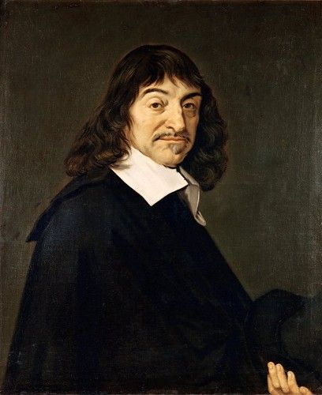
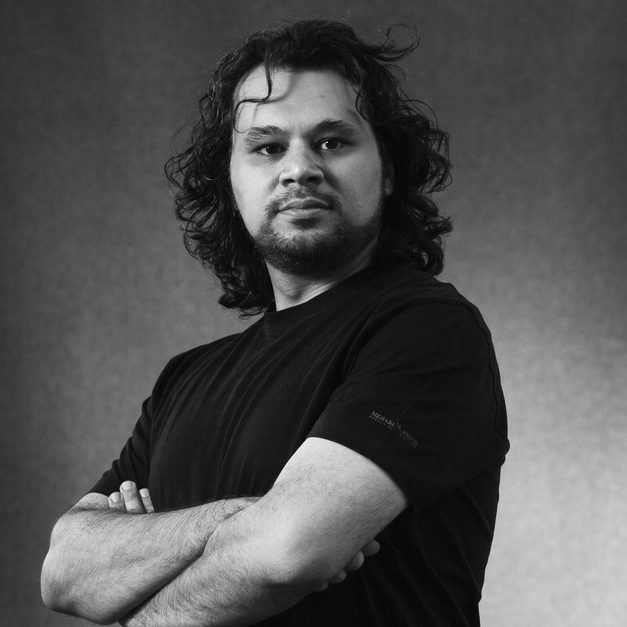
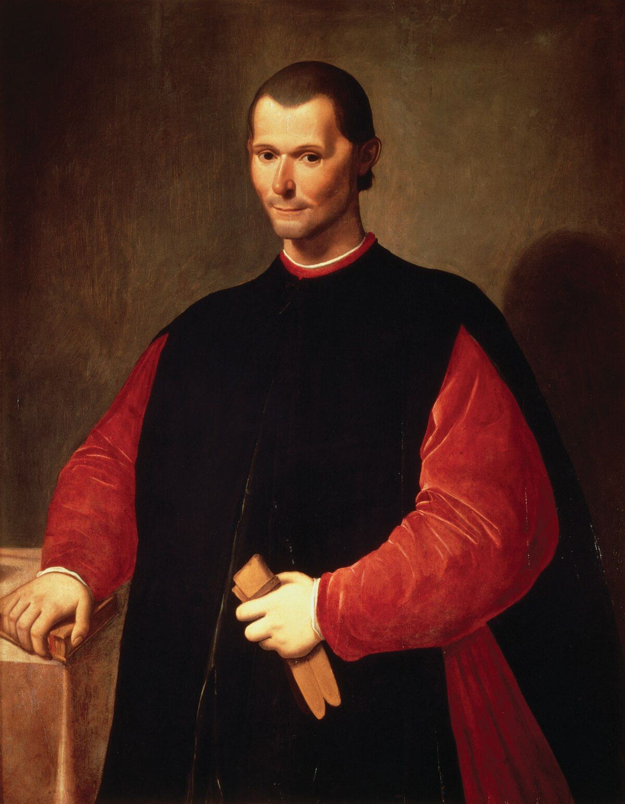
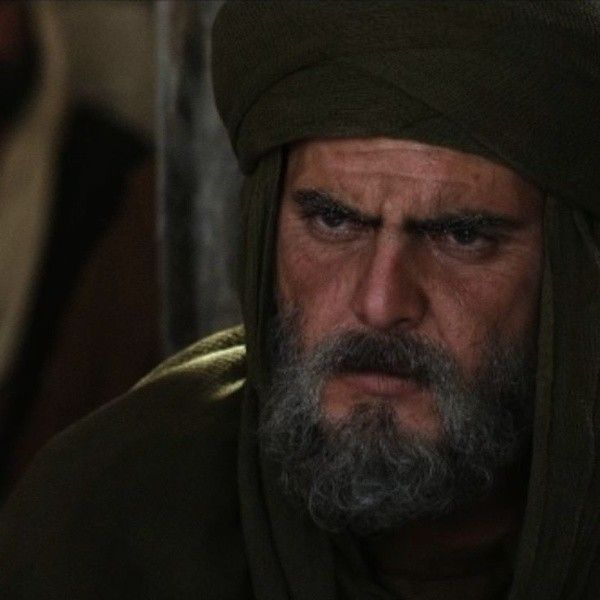
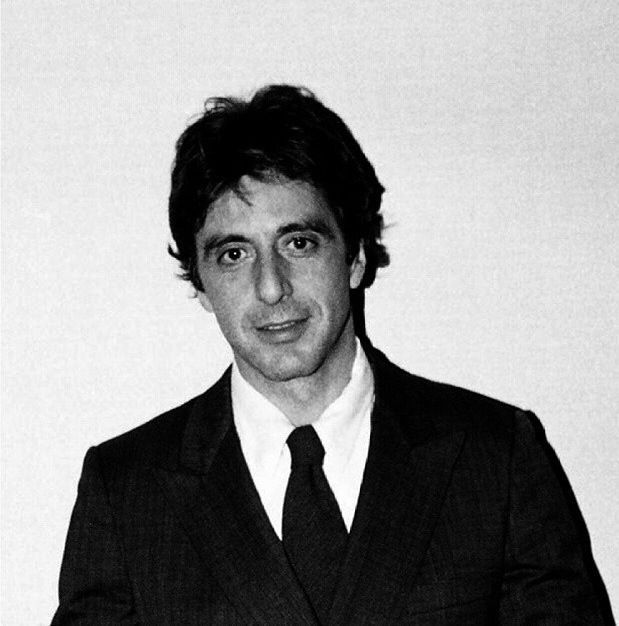
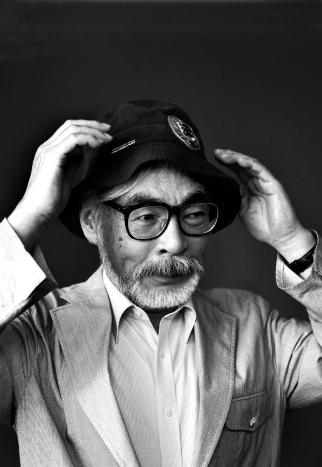

المجموعة الأولى: الفكر والمنهج الفلسفي

أبو حامد الغزالي
الشك والمنهج الوجوديأحترم فيه شجاعته الفكرية المطلقة في الشك وتفكيك قناعاته الشخصية، واعتزاله للبحث عن جوهر المعنى الوجودي من نقطة الصفر. لكنني لم أتبعه في عزوفه التام عن الحياة المادية؛ إذ أؤمن بضرورة البقاء في قلب الميدان, وتحويل الأفكار المجردة إلى شواهد بصرية وفراغات معمارية ملموسة تعاش وتترك أثراً في الواقع، بدلاً من الانسحاب الكامل.

فريدريش نيتشه
إرادة القوة والفرادةأحترم فيه تقديسه للفرادة الفردية، ورفضه لـ "عقلية القطيع"، وقدرة الإنسان المستقل على صياغة قيمه الخاصة وتحديد معناه الشخصي في كون فوضوي. لكنني لم أتبعه في عدميته القاسية التي قد تؤدي للتدمير الذاتي؛ بل أختار تسخير تلك الإرادة الحرة في بناء وتصميم هياكل جمالية منظمة، تصنع جسور تواصل مع الآخرين دون التنازل عن الاستقلالية.

رينيه ديكارت
العقلانية والمنهجأحترم فيه إصراره على الشك المنهجي كأداة لبلوغ اليقين، وتقديسه لسلطة العقل، وتقسيم المعضلات المعقدة لأجزاء قابلة للحل. لكنني لم أتبعه في فصله الحاد بين الجسد والعقل؛ إذ أرى في الفن والتصميم اندماجاً عضوياً يذيب هذا الفاصل تماماً.

ألبرت آينشتاين
النسبية والفضول الوجوديأحترم فيه فضوله الطفولي اللانهائي، وقدرته على التفكير عبر "التجارب الذهنية"، وإدراكه الفذ بأن الزمان والمكان ليسا مطلقين بل يمتزجان بمرونة. لكنني لم أتبعه في سعيه وراء معادلة كونية موحدة تختزل الوجود؛ فبالنسبة لي، تكمن روعة الوجود والابتكار في التناقضات العاطفية والتفاصيل الصغيرة غير المتوقعة التي تعاند الاختزال.

راي داليو
المبادئ والأنظمةأحترم فيه عقلانيته المفرطة وقدرته على نمذجة الحياة والعمل في هيئة نظام متسق مبني على مبادئ وحلقات تغذية راجعة واضحة. لكنني لم أتبعه في محاولته مكننة وتأطير المشاعر والروح الإنسانية؛ إذ أرى أن الأنظمة البحتة خالية من الروح دون الفن، والعفوية الإبداعية، وجمال الفراغات الصامتة التي لا يمكن قياسها بمعادلات مادية جافة.

د. مصطفى محمود
بوابة الفكر الأولىله الفضل الأول والأعظم في خروجي إلى أولى دروب التفكير؛ فهو الذي سحبني بأطروحاته الفريدة إلى أولى خطوات الفكر، وأحمّله فضل كل نتيجة فلسفية أو عملية وصلتُ إليها اليوم. ورغم أنني اختلفتُ معه لاحقاً في بعض تحليلاته العلمية وتفسيراته الفلسفية، إلا أنني لا أزال أكنّ له الاحترام الكامل والامتنان المطلق كونه المُلهم الأول الذي أضاء طريقي نحو التأمل الحر.

ابن تيمية
الصلابة والمبدأأحترم فيه صلابته الفكرية المدهشة، وعدم تهاونه في قول ما يعتقده حقاً، وقدرته على الكتابة والتأليف والاشتباك الفكري حتى من داخل جدران سجنه. لكنني لم أتبعه في الاشتباك الفقهي المباشر، متجهاً نحو إعادة بناء المعاني الجمالية عبر لغة التصميم المعاصر.
المجموعة الثانية: الإستراتيجية والقيادة التاريخية

د. نايف بن نهار
علم المنطق وتفكيك الخطاباتأحترم فيه قدرته الفذة على تفكيك الخطابات وتطبيق أدوات علم المنطق ومناهج البحث العلمي بأسلوب منهجي صارم وواضح، يربط الأصالة بالواقع المعاصر. لكنني لم أتبعه في حصر الأدوات بالتحليل المنطقي والجدلي البحت؛ بل أسعى لدمج هذا التفكير المنظم العقلاني بلغة بصرية وفراغات إبداعية تجسد تلك القواعد المنهجية واقعاً ملموساً.

تميم البرغوثي
بلاغة الكلمة وجرأة الموقفأحترم لغته العالية وجرأته في بعض المواقع التي تتطلب صوتاً حراً وقصيدة صارخة. ومع ذلك، أختلف معه في بعض التصورات العقدية والشخصية؛ إيماناً مني بأن الجمال اللغوي لا يكتمل إلا بسلامة المنهج وتوازن الرؤية.
.jpg)
سون تزو
الإستراتيجية والدهاءأحترم فيه دهاءه الإستراتيجي الفذ، وإدراكه المبكر بأن أعظم الانتصارات هي تلك التي تُنتزع دون قتال (كما تجلى في الفلسفة التي وحدت الصين). لكنني لم أتبعه في تحويل التفاعل إلى ساحة معركة؛ بل أوظف هذا التخطيط لاختراق السوق بنعومة وترك أثر مستدام.

خالد بن الوليد
العبقرية العسكرية والإقدامأحترم فيه عبقريته التكتيكية التي لا تُضاهى، وشجاعته في اقتحام المجهول، وقدرته على تحويل مسار أي تحدٍ بفضل سرعة البديهة واليقين الراسخ. أستلهم هذا الإقدام في اختراق الأسواق وكسر الأنماط التقليدية بقرارات إبداعية حاسمة لا تعرف التردد.

الإسكندر الأكبر
الطموح الإمبراطوري واقتحام المجهولأحترم فيه طموحه الذي لا يحده أفق، وقدرته الأسطورية على قيادة الجيوش واقتحام أقاصي الأرض المجهولة بروح القائد الشاب الذي يتحدى المستحيل. لكنني لم أتبعه في مساره الإمبراطوري التوسعي المعتمد على الغزو والسيطرة المادية؛ بل أختار تحويل هذا الشغف بالاقتحام إلى فتوحات إبداعية وتصميم عوالم وفراغات مبتكرة تثري حضارة الإنسان دون تدمير.

نيكولو مكيافيلي
الواقعية السياسية ودراسة القوةأحترم فيه واقعيته المفرطة في قراءة النفس البشرية وتحليل مسرح القوة دون تجميل أو مثاليات زائفة. أختلف معه في مبدأ "الغاية تبرر الوسيلة"؛ إذ أرى أن الوسيلة جزء لا يتجزأ من شرف الغاية، ولا يمكن لصرح عظيم أن يُبنى على أسس فاسدة مهما بدا متيناً.

عمر بن الخطاب
العدالة الصارمة والتأسيس المؤسساتيأحترم فيه عدالته المطلقة التي لا تحابي أحداً، وعبقريته الفذة في تأسيس الدواوين وبناء هياكل الدولة الإدارية من نقطة الصفر بوعي مؤسساتي سابق لعصره. أستلهم من شخصيته هذا الحزم المنهجي والالتزام بالحق المطلق في المعاملات، لكنني أختلف مع شدته المهيبة في فرض النظم؛ إذ أنحاز في رؤيتي الفنية والتجارية إلى المرونة العاطفية، والنعومة الإبداعية، وجمالية الخطوط المنحنية في مواجهة استقامة القواعد الجافة.
المجموعة الثالثة: الإبداع والرؤية والريادة

آل باتشينو
التقمص الإبداعي والعمق النفسيأحترم فيه قدرته الفذة على التقمص النفسي الكامل والاندماج العميق في تعقيدات الشخصيات الدرامية التي يجسدها، مقدماً أداءً تعبيرياً بليغاً يمس الروح. لكنني أختلف معه في الاستهلاك العاطفي المفرط والذوبان التام في عوالم درامية مصطنعة؛ إذ أؤمن بضرورة الحفاظ على مسافة واعية تسمح بتوظيف الإبداع في بناء كيانات وتجارب حقيقية مستدامة على أرض الواقع.

ابن خلدون
العمران وقراءة التاريخأحترم فيه تأسيسه لعلم الاجتماع وفهمه العميق لطبائع العمران وصعود وسقوط الحضارات وفق قوانين دقيقة. لا أجد مساحة حقيقية للاخلاف معه هنا؛ بل أعتمد منهجيته في قراءة "العمران" لمحاولة بناء أعمال تتجاوز الزمن وتتفاعل بصدق مع سياق مجتمعاتها.

ستيف جوبز
الرؤية العملية وربط الفلسفة بالعملأحترم فيه رؤيته العملية الفذة وقدرته الاستثنائية على ربط الفلسفة بالعمل، حيث طوّع الجماليات البسيطة لتتحول إلى أدوات تفاعلية تصنع تجربة إنسانية فريدة. لكنني لم أتبعه في كماليته المفرطة وقسوته الإدارية التي قد تلغي البعد الإنساني المرن في سبيل تحقيق الرؤية المطلقة.

نيكولا تسلا
التفكير التخيلي والطاقة اللانهائيةأحترم فيه قدرته المذهلة على التخيل الإبداعي ورؤية المستقبل، وتفكيك قوانين الفيزياء لابتكار مفاهيم ثورية في الطاقة والاتصال اللاسلكي قبل عصرها بعقود. لكنني لم أتبعه في مثاليته الحالمة التي جعلته يتغاضى عن الجوانب العملية والواقعية للأعمال؛ إذ أؤمن بضرورة هبوط الفكرة الملهمة إلى أرض الواقع وتحويلها إلى كيان مستدام يخدم الإنسان.

هاياو ميازاكي
السرد البصري وعوالم الخيالأحترم فيه قدرته الفريدة على نسج الحكايات الخرافية وتجسيد عوالم خيالية مذهلة تفيض بالحياة وتخاطب الطفل الكامن داخل كل منا، مع تمسكه الحازم بالرسم اليدوي التقليدي في عصر الرقمنة. لكنني أختلف معه في نظرته المتشائمة والقاتمة أحياناً تجاه تقدم البشرية والتطور التقني؛ إذ أؤمن أن التكنولوجيا والابتكار هما امتداد طبيعي لقدرات الإنسان عندما يوظفان في خدمة الجمال وإعمار الأرض.

شي جين بينغ
القوة الإستراتيجية وموازنة الهيمنةأحترم فيه قدرته الفذة وذكاءه الإستراتيجي الحاد في قيادة بلاده لمواجهة القوى الغربية، وتحويل الصين إلى تهديد حقيقي وفعلي للهيمنة الأمريكية عسكرياً وسياسياً واقتصادياً. لكنني أختلف معه جذرياً في سياساته الداخلية الشمولية وعمليات الاضطهاد الممنهجة ضد الأقليات في المجتمع، ولا أتبنى نظامه الاقتصادي أو أسلوبه الحاكم بأي شكل من الأشكال.
.jpg)
حبيب نورمحمدوف
الانضباط والوفاء للعهدأحترم فيه انضباطه الحديدي، وقوة يقينه، ووفاءه الاستثنائي بعهده لوالدته ووالده رحمه الله، مما أثمر مسيرة أسطورية خالية من الهزائم. أستلهم من هذا الانضباط المثابرة والتركيز المطلق لتقديم أعلى معايير الجودة دون تشتت في عالم الأعمال.